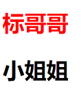

Web前端工程师技术点概述
前端到底是什么？
前端和HTML5有什么关系？
前端可以做什么？以后的发展方向是什么？
Web前端工程师只是一个概念性的名称，它一般叫前端工程师，有时候也叫h5工程师（以前的说明）。现在的Web工程师更多的叫前端（大前端）
以前的前端工程师可能只是做网页，但是现在的前端工程师基本涉及到全栈化开发
graph TD
A[前端工程师]-->B[PC页面]
A-->C[手机端页面]
A-->D[网页游戏]
A-->E[各种小程序]
A-->F[公众号]
A-->G[安卓]
A-->H[IOS]前端的技术栈
精通HTML，CSS，了解HTML5的新特性，熟练使用div+css进行布局，精通各种布局方式
流式布局、弹性布局，响应式布局，自适应布局
熟练的进行页面重构，熟悉各种浏览器的特性与兼容性，熟练的通过原型图转换为网页效果图
精通
JavaScript原理，熟练的使用ES5，ES6进行代码开发熟悉面向对象开发，了解高类聚与低耦合，熟悉对象特性与原型链
熟练操作网页的DOM与BOM进行开发【今天会用到】
Ajax数据通讯，fetch数据通讯以及HTTP协议的处理
知道了下结常见的基础操作框架
jQuery,bootstrapnodejs，express,路由，service以及mysql或mongodb的数据库后台开发，及webApi的开发方式webpacksass/scss/less/styluesvue及vue全家桶axios数据请求以及状态码，请求拦截，拦截器等微信小程序开发，
uniApp混合式APP开发（开发安卓与IOS的）react及全家桶开发
…….
后面还有好多没有列举
前端知识点串联
今天我们将会把HTML+CSS+JavaScript的知识做一个串联，以基础授课为主，案例为铺来完成我们的学习
【我们要慢慢的走向正式班的授课模式】
CSS选择器
CSS常称九大选择【共11个类型】，不同的选择器决定我们的使用场景会不一样
CSS常进行样式的操作，我们如果要设置网页中某一个标签的样式，则可以通过它来进行，CSS的代码一般写在3个地方
第一个地方
直接将CSS代码写在标签的style属性里面去
<h1 style="color: red;">一号标题</h1>
<h2 style="border: 1px solid red;">标哥哥</h2>
<h3 style="color: red;border: 2px solid blue;">三号标题</h3>在上面的HTML代码里面，我们看到可以给它添加一个style，然后在里面输入我们的样式内容，任何HTML都可以
第二种方式
上面的写法虽然说非常方便，但是有个问题很严重，如下
<h3 style="color: red;border: 1px solid blue;">标哥</h3>
<h3 style="color: red;border: 1px solid blue;">真帅</h3>
<h3 style="color: red;border: 1px solid blue;">哈哈哈</h3>上面的h3标签样式都是一样的，我们要简化它的操作，操作如下
- 将
style属性转换成<style>标签，放在<head>里面 - 将原来的CSS代码写在
<style>标签里面，然后使用{}包括 - 因为这段CSS代码是为
<h2>标签提供样式的，所以我们可以把它的前面添加一个h3，最终代码如下
<style>
h3{
color: red;
border: 1px solid blue;
}
</style>
<h3 >标哥</h3>
<h3 >真帅</h3>
<h3 >哈哈哈</h3>这么做的目的就极大的提供了我们的效率，后期的大多数开发里面，都使用的是这一种方式
第三个地方
我们可以新建一个CSS的文件，然后再去书写的CSS代码
针对第二种的方式，我们要知道它的语法
h3{
color: red;
border: 1px solid blue;
}上面的代码的语法其实是下面这种方式
选择器{
CSS属性:CSS属性值;
}选择器就是用于选择某些元素然后设置某些样式
在选择器里面，我们有11种选择器，现在我们先列表常用的选择器
标签选择器
以标签的名子为选择器的名子来进行选择，如下所示
<style> h1{ color: red; } h2{ color: blue; } h3{ color: green; } p{ color: yellow; } </style> <h1>第一个</h1> <h2>第二个</h2> <h3>第三个</h3> <p>第四个</p> <h3>第五个</h3>标签选择器是一种最直观的选择器
ID选择器
这是一种比较常用的选择器，一般用于精确选择某一个元素
<style type="text/css"> /* 只希望把标哥哥设置为红色 */ /* #a代表的就是id="a" */ #a{ color: red; } </style> <h2 id="a">标哥哥</h2> <h2>小姐姐</h2>
子代选择器
<style type="text/css"> #box1{ height: 200px; border: 2px solid red; } /* 将盒子内部的h2设置为蓝色 */ #box1>h2{ color: blue; } </style> <div id="box1"> <h2>我在盒子的里面</h2> </div> <h2>我在盒子的外边</h2>伪类与伪元素选择器
伪类与伪元素选择器非常重要，学好这个代码会少很多，我们之前已经学过了几个常用的伪类选择器
:hover代表鼠标放上去的效果:active代表鼠标按下去以后的效果:nth-child选中第几个子元素经
剩下的选择器将在下次基础课程当中完整讲解，本次课程的基础是以案例为目标来讲的
CSS的定位与变换
为了完成我们的案例效果，我们需要使用到CSS当中一些常用样式属性
选择器{
CSS属性:CSS属性值
}上面的基础里面，我们已经可以通过选择器完成HTML元素的选择，再我应该要通过样式去设置它了
所以当我们想实现环形动画的时候，我们就要掌握其中的2个基本点
子绝父相
子绝父相是一种布局概念，它可以让元素以另一个元素标准进行布局【定位的基础】
子绝父相就是子级元素使用绝对定位 而父级元素使用相对定位
<style type="text/css">
#box{
width: 100px;
height: 100px;
border: 2px solid black;
position: relative;
}
#a{
width: 100px;
height: 100px;
background-color: deeppink;
/* 绝对定位 */
position: absolute;
}
#b{
width: 100px;
height: 100px;
background-color: lightseagreen;
/* 绝对定位 */
position: absolute;
}
</style>
<div id="box">
<div id="a">第一个盒子</div>
<div id="b">第二个盒子</div>
</div>变换transform
变换是CSS3当中最常的一种特效，目前主流的变换方式有以下几种
- 位移
translate - 缩放
scale - 旋转
rotate
位移translate
位移指的是元素在X轴，Y轴或Z轴上面发生位子的变化
translateX沿着X轴发生位移translateY沿着Y轴发生位移translateZ沿着Z轴发生位移
关于位置移动有个口诀：左负右正，上负下正
缩放scale
缩放指元素的大小像放大镜一样发生了变化
scaleX在X轴上缩放scaleY在Y轴上缩放scale在X轴与Y轴同时缩放scale3d在X轴与Y轴和Z轴上面同时缩放
缩放是以倍数为单位，默认是
1:1
旋转rotate
旋转是元素沿着某一个角度去发生变换
rotateX沿着X轴旋转rotateY沿着Y轴旋转rotateZ沿着Z轴去旋转
注意事项：
- 旋转是以角度为单位
deg- Z轴上面顺时针是正数，逆时针是负数
- X轴与Y轴执行“握手原则”去判断，握手进去的方向是正，反之为负
开启3D的模式
目前开启3D模式主要有2种
添加视角
一般是在变换元素的外层添加
perspective即可实现形成Z轴也可以实现3D
默认情况下，网页上面的空间都是平面空间，不可能有3D，也就不可以有Z轴，但是可以添加
transform-style:preserve-3d;来转换成3D空间<style type="text/css"> #box{ width: 100px; height: 100px; border: 2px solid black; transform: rotateX(15deg) rotateY(15deg); /* 将这个盒子由平面空间转换为3D空间 */ transform-style: preserve-3d; } #a { width: 100px; height: 100px; background-color: deeppink; transform: translateZ(50px); } </style> <div id="box"> <div id="a">旋转</div> </div>
CSS过渡
CSS中的过渡指的元素由一个值变成另一个值的时候，实现一个缓慢的过渡效果
<div class="a">
这是一个盒子
</div>
<style type="text/css">
.a{
width: 100px;
height: 100px;
background-color: red;
}
.a:hover{
width: 200px;
}
</style>当鼠标放在.a的元素上面的时候，宽度由100px变成200px是一瞬间完成的，我们希望它有一个过渡效果，怎么办呢？
我们可以把上面的CSS代码换成这个代码
.a{
width: 100px;
height: 100px;
background-color: red;
transition: width 2s,height 2s 2s;
}
.a:hover{
width: 200px;
height: 300px;
}过渡主要使用的是transition来完成的
CSS的动画
- 动画的定义
- 动画的使用
JavaScript的语法基础
JavaScript是我们网页开发过程当中最重要的一个环节，它与我们的Java语言有很多相似之处，它也是一门编程语言，是Web前端开发过程当中必不可少的一个环节
JavaScript的代码一般写在网页面<script>里面
更多知识欢迎关注微信公众号“ 51 学代码 ”